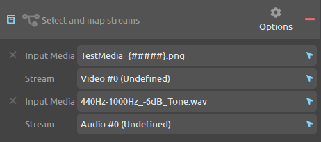

Adding / Changing streams¶

With DuMe you can easily add or change audio streams (and other type of streams) in the output files.
Add a new stream from file¶
To add new streams to the output file from multiple input medias, you can just add them as new input medias (using the “Add…” button on the input panel of DuME). You don’t need to change anything else.
If the output file can contain only a limited number of streams (e.g. one video and one audio stream, like mp4), and there are more available streams in the input medias, DuME will automatically select the best-quality streams it can find from all the input medias. If you want to manually select specific streams, read the section below entitled Changing / Mapping streams.
Changing / Mapping streams¶
If you need to select specific streams from the input medias to be used in the output file, you can do so using the Select and map input streams options on the output panel of DuME.

- Add streams using the options button .
- Then, you can select an input media and the stream to use from it.
Important
As soon as you’ve added some streams using the mapping options, they will be the only streams used in the output file, all other streams will be ignored. That means you have to manually select all the streams you want to use in the output file.